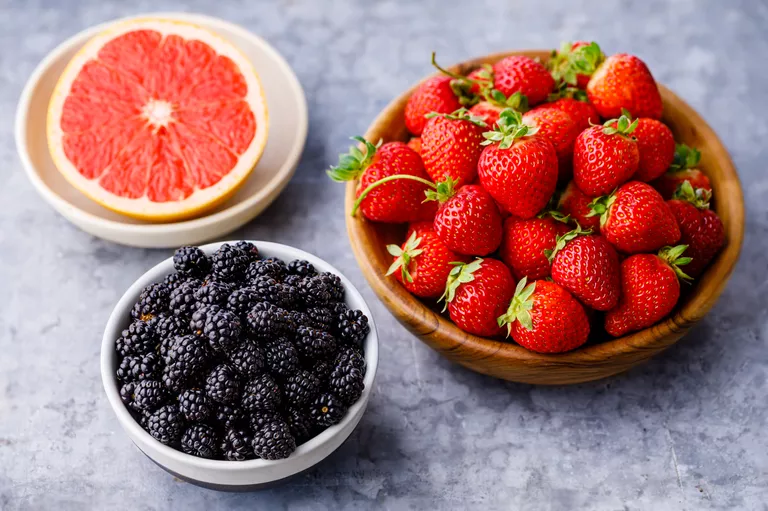
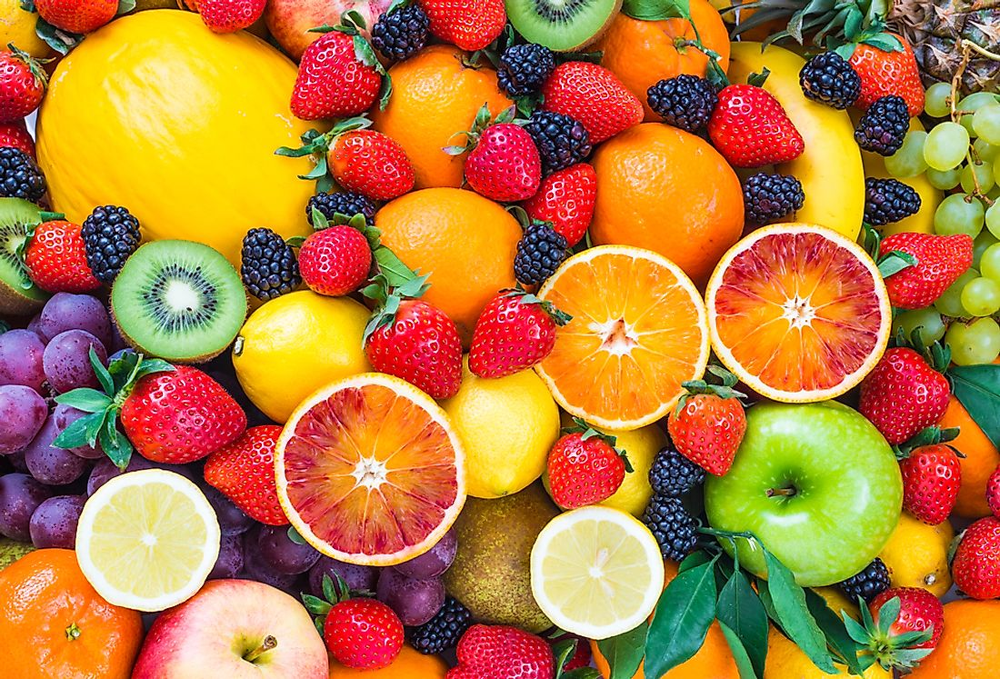
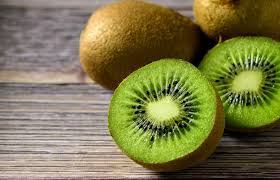
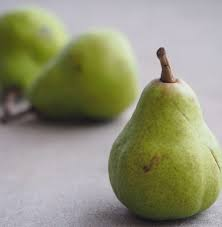
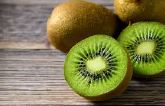
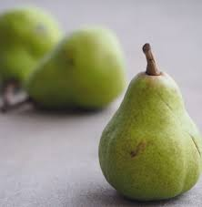

Fruits are an excellent source of essential vitamins and minerals, and they are high in fiber. Fruits also provide a wide range of health-boosting antioxidants, including flavonoids. Eating a diet high in fruits and vegetables can reduce a person's risk of developing heart disease, cancer, inflammation, and diabetes.
 Citrus fruits such as orange, kiwi, lemon, guava, grapefruit, and vegetables such as broccoli, cauliflower, Brussel sprouts and capsicums are rich, natural sources of vitamin C. Other vitamin C-rich fruits include papaya, cantaloupe and strawberries.
 



Possibly the most ubiquitous juice on the market, fresh orange juice is one of the healthiest drinks you can grab. Everybody knows it's a great source of vitamin C, but most people don't know that this healthy drink is a good source of potassium and thiamin plus calcium and vitamin D if it's fortified